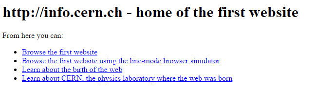
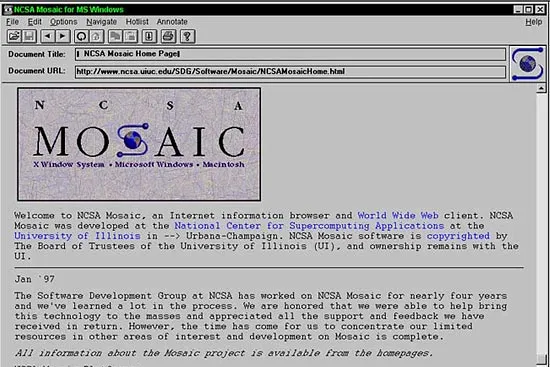

De simples texto à revolução gráfica
| Home | O Primeiro Site e Navegador | Pessoas e Empresas | Sobre |
O Primeiro Site da HistóriaO primeiro website do mundo foi lançado em 6 de agosto de 1991 por Tim Berners-Lee no CERN. O site era dedicado a explicar como a World Wide Web funcionava, como obter um navegador e como configurar um servidor web. A página original era puramente textual e continha links para outros documentos. Em 1993, o CERN colocou o software da World Wide Web no domínio público, permitindo que qualquer pessoa o usasse e desenvolvesse sites. |
 Captura de tela do primeiro site (recriado) |
|
 Interface do navegador NCSA Mosaic |
O Primeiro Navegador GráficoEmbora o próprio Tim Berners-Lee tenha criado o primeiro navegador chamado WorldWideWeb (depois chamado Nexus), ele era limitado. A verdadeira revolução veio com o NCSA Mosaic em 1993. O Mosaic foi o primeiro navegador capaz de exibir imagens e texto na mesma janela, tornando a Web visualmente atraente para o público comum. Ele foi desenvolvido por uma equipe liderada por Marc Andreessen e Eric Bina. |